Advertisement of Westervelt offering 100 or 1000 stamps as it appeared several times in the Stamp Collector's Monthly Gazette (St.John New Brunswick) of 1866.
Return To Catalogue - United States locals overview -Teese's to Washington Despatch - United States
Note: on my website many of the
pictures can not be seen! They are of course present in the cd's;
contact me if you want to purchase the catalogue.
Warning: most of the Westervelt's stamps were mainly issued for stamp collectors!
Advertisement of Westervelt offering 100 or 1000 stamps as it
appeared several times in the Stamp Collector's Monthly Gazette
(St.John New Brunswick) of 1866.
(Genuine, reduced size, image obtained from a Siegel auction:
http://www.siegelauctions.com/1999/817/yf817280.htm#west )
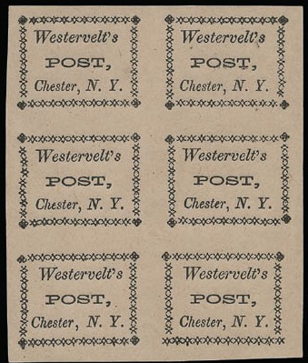
Types 7 and 8, and type 8, genuine, but probably with a bogus
cancel
Type 10 (twice)
The distinguishing characteristics of the 12
types:
Type 1: Bottom left corner ornament broken. No serif on the left
top of 'Y'
Type 2: Right bottom corner ornament misplaced. No serif on the
left top of 'Y'
Type 3: Left border rather wavy
Type 4: Both the bottom right corner ornament and the upper rigth
corner ornament are placed too high
Type 5: corner upper left ornament has a missing bottom part
Type 6: bottom corner ornaments are normal 'stars'
Type 7: "-" instead of "," behind
"POST" (only found as a reprint?)
Type 8: Right hand border wavy
Type 9: Upper left corner ornament trimmed
Type 10: Peculiar wavy bottom
Type 11: ?
Type 12: Right border not aligned

I've been told that these stamps are genuine.
This stamp exists in the colours black on buff and black on lavender.
Hussey forgeries?
This appears to be a forgery made by Scott
The forger Hussey made forgeries of the above stamps. The next stamps are forgeries:
Forgery with a totally different border.
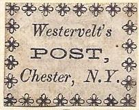
(genuine, image obtained from a Siegel auction)
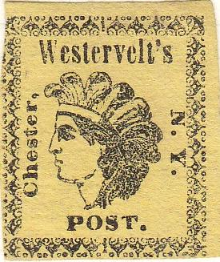
Types 2, 3 and 4
According to the Scott catalogue this stamp
should have the colour: red on pink. Other sources say, that
stamps in different colors were sold, mainly to collectors, as
well. This was a more or less philatelic issue, six different
types exist in the sheet (mainly differing in the border
setting). The six types can be distinguished with:
Type 1: There is an "i" in the lower border
Type 2: There is an "i" in the upper ornaments above
the "v".
Type 3: All corner ornaments are turned 45 degrees (i.e. only
pointing up or down)
Type 4: Lower left and right ornaments are pointing 'outwards'
(thus not at an angle of 45 degrees as in most other types).
Type 5: Lower right ornament different
Type 6: No "i"s in lower or upper borders.
A sheetlet of reprints with the 6 different types.
Types of the reprint:
Type 1: The "i" in the lower border is replaced with a
dot.
Type 2: The small "i" is now placed above the
"r"
Type 3: As the original type 3
Type 4: The lower corner ornaments are now corrected.
Type 5: Lower right corner ornament is now corrected.
Type 6: As the original type 6
I presume the next stamps in black are forgeries or reprints:
I have been told that the following stamps have been made by the forger Taylor:
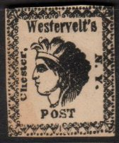
I have also seen the above Taylor forgeries in the colours: red on blue, green, red on yellow and green on yellow.
Other forgery:
A bogus "JONES CITY EXPRESS POST" stamp in a very
similar design.
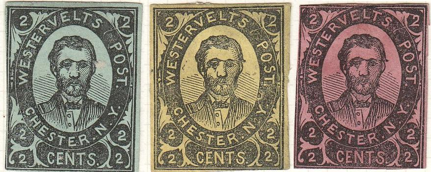
Genuine stamps.
(Genuine? reduced size)
These stamps were issued in black on yellow, black on green and black on lilac in sheets of 6 stamps. More or less a philatelic issue. Reprints appear to exist in many colors.
Westervelts post also issued envelopes with an eagle in an ellipse:
Genuine cut square.
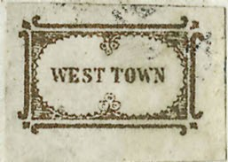 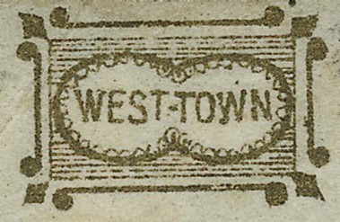
Genuine stamps, images obtained from a Siegel auction.
(Genuine)
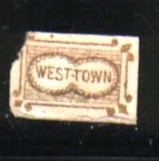
This stamp was issued in 1853. There seem to be 2 types: stamps with inscription "WEST TOWN" and stamps with inscription "WEST-TOWN" (with a "-"). The colour should be gold (and not red-brown!). I know that the forger Taylor made forgeries of these stamps.
Forgeries
Forgery in a much larger design
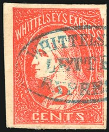
(Genuine, reduced size, images obtained from a Siegel auction:
http://www.siegelauctions.com/1999/817/yf817282.htm )
The only stamp issued was a 2 c red in 1857. Only 4 used stamps and a few unused stamps (including a block of 4) are known of this local post (according to the Siegel auction website).
The next stamps are probably all forgeries:
Whittelseys Express forgery?
Forgery with white "2"; I've also seen this forgery in
black on yellow, black and black on lilac.
A "PENNY POST" bogus stamp in a very similar design.
I've also seen it in black on yellow.
Note that in some of the above stamps the '2' is white in colour. There was never a blue stamp issued.
Is the above stamp a bogus issue for Whitteley's Express? Note the striking resemblance with the other image of a 'Bancroft's' bogus local issue for Montreal (Canada). Also Whitteley's is spelt differently (one "S" missing!).
A local post in Cincinnati:
Image obtained from a Siegel auction.
A stamp with inscription 'WOOD & Co. City Despatch BALTIMORE' was issued in 1856 in the colour black on yellow. Only 4 stamps are known to exist (all on cover); source: http://www.siegelauctions.com/1999/817/yf817283.htm#296 .
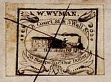
More information about this stamp can be found on: http://alphabetilately.com/US-trains-00.html (the images of the genuine stamps are from this website, who in turn got them from a Siegel auction). There seem to exist only 34 covers with this stamp. Many forgeries exist (at least 6 different types of forgeries)! The genuine stamps are always in black.
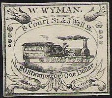
(Probably a forgery or another Hussey
reprint?)
I have seen forgeries in fancy colours: black on yellow, orange etc.
Forgeries, the ornaments are slightly different.
In these forgeries, the word "Stamps" touches the
flower-like ornament below it.
The image of this stamp was found on :http://www.siegelauctions.com/1999/817/yf817285.htm#298. The only value issued was a 1 c black on blue in 1851. Only two stamps are known to have survived upto now. The stain on the stamp is due to the accid cancel which was used (all according to the same website).
{kind=link}
{kind=link}
{kind=link}
{kind=link}
{kind=link}
{kind=link}